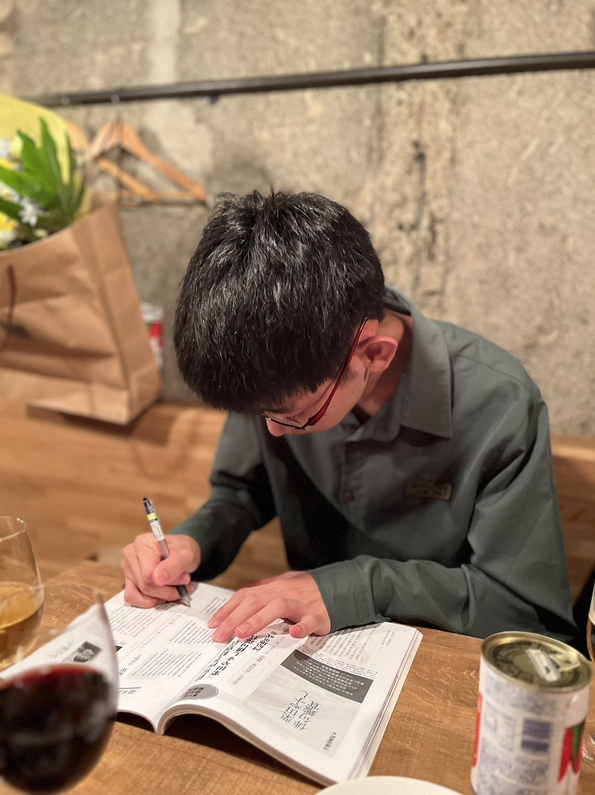

About Me

これまで
平成12年東京都生まれ。2025年6月北京大学光華管理学院を卒業(管理学)。更新時現在、慶應義塾大学商学部商学科在籍。趣味は、ランニング、旅、俳句です。
学部卒業論文
誰得情報だとは思うのですが、他に書くことも取り立てて思いつかなかったので、学部時代に書いた卒業論文について触れます。
北京大学で書いた学部卒業論文は、"Research on Using Anonymous Names in Online Consumption: A Comparative Study between Chinese and Japanese"でした (学部論文のため、外部には非公開)。
慶應義塾大学で書いた学部卒業論文は、『知財イノベーション-人格性基礎的正当化によるトレード・オフの打開とコンピュータ・シミュレーション-』 でした (同じく学部論文のため、外部には非公開)。
業務経験
その間、業務委託契約を通じて、英語指導業務を受注していました。具体的には、2020年から大学受験生に向けた英作文指導をチャット形式で、21年から中学生・高校生/既卒生に向けた大学受験英語答案作成指導を通話形式で、22年からEngooでオンライン英会話講師として英会話指導をビデオ通話形式で実施してきました。これらの指導は今でも継続しています。指導をご希望のかたは、いつでもお問い合わせページからご一報ください。
俳句
- 第三十四回伊藤園お〜いお茶新俳句大賞佳作特別賞「非常口から蝶々の群れふたたび」
- 第三十五回伊藤園お〜いお茶新俳句大賞佳作「階段のほこり古べば朝の昼」
- 第22回あらかわ俳壇一般の部入選「秋こぼれ落ちて蝶々とは微光」
- (※以上が本名名義での俳句入選作です。ですが実は、俳句については別名義を持っています。そちらのほうが断然アクティブではありますが、名義が違うのでそちらの作品はこのページには載せていません)
資格 ※指導業務発注をご検討中のかたには、お問い合わせいただければ、より詳細に学習経歴をお伝えします
英語
- 実用英語技能検定 一級 合格 CSE2706 (22年)
- TOEIC Listening & Reading Test 990点 (23年)
中国語
- HSK (漢語水平考試） 6級 213点 (25年)
- 中国語検定試験 3級 合格 (24年)